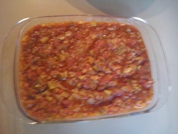

Pisto Castellano
Ingredientes

- 1 kg de cebolla
- 1.5 kilos de calabacín
- 1/2 kg de pimientos
- 3 ajos
- Perejil
- Aceite
- Sal
Realización:
Pica la cebolla menuda y ponla en una sartén
a freír con el pimiento cuando este un poco blanda
añadir los ajos y el calabacín cortado en
cuadritos pequeños, agrega el tomate también
cortado pequeño, el perejil picado. Deja cocer
tapado a fuego lento hasta que este tierno.
Y servir